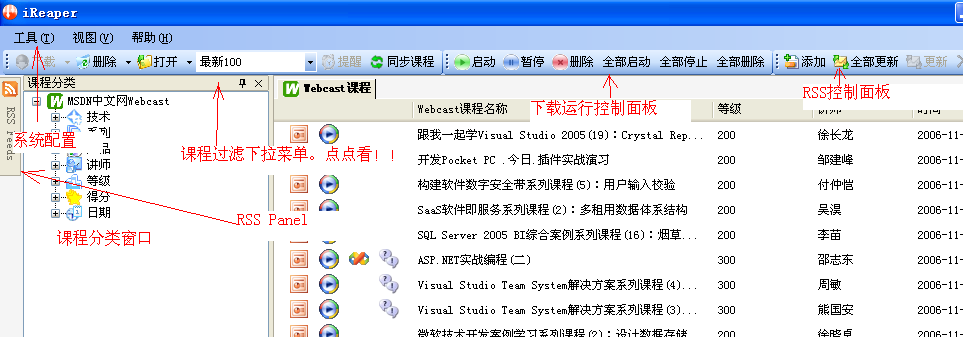

管理软件——iReaper
微软中国在2004年推出了中文MSDN Webcast一系列网络在线课程，任何人都能通过互联网来免费收听、收看实时的网络视频直播课程，或者下载往期的网络课程录像。面对如此丰富的技术资料，很多朋友都会下载并保存在电脑中慢慢细读研究。但随着资料日久天长的积累，如此庞大的技术资料库，怎样才能进行有效的收藏管理呢？这里笔者给你推荐一款名为iReaper的小工具，它能帮助你轻松完成MSDN在线资源的下载以及收藏管理。
软件版本：1.2
软件大小：1013 KB
适用平台：Windows 9X/2000/XP/2003
下载地址：http://family1.chinaok.com/down/200704/ireaper.rar

http://images.chinaok.com/cache/ezine/2007-02/1170387876.jpg
帮你管理杂乱的资料
解压后直接运行“IReaper.exe”即可启动软件。第一次运行，软件将要求设置资料下载保存的默认文件夹和设置代理服务器（如果没有使用代理服务器，可以选择“直接连接”）。完成之后，就将进入iReaper主界面。界面左侧列表显示了中文MSDN Webcast上所有课程分类，并且已经按产品、日期、等级等内容进行了归类。如果你想下载某项课程的具体内容，可选择该课程所在分类，在右侧就会显示该类下面所有具体课程名称的列表中，右键单击想要下载的课程名称，并选择右键菜单中的“下载”即可。需要查看时，右键单击右侧课程名称列表中的课程，选择“打开”，再选择具体要查看的内容即可，此时iReaper就会调用系统默认的音视频播放器进行播放了。
编辑点评：该软件的功能较全，但是其缺点是不支持检索功能，稍显不足。
=============================
听说MSDN的资源很多，过去的将来的，对于programmer或者计算机爱好者怎能错过，那么借助ireaper吧!
Reaper 界面布局：
图中标明了如下6个区域：
系统配置、课程分类窗口、过滤下拉菜单、RSS Panel、下载运行控制面板、RSS控制面板
特别说明的是：
1.“课程过滤”下拉菜单定义了对课程不同级别的过滤，比如如果想看全部课程就需要在下拉框中重新选定一下“全部课程”。
2. RSS控制面板包含了添加新的RSS Feed的功能。
3. 下载运行控制面板控制课程下载的启动、暂停、删除功能。

http://hiphotos.baidu.com/adown/pic/item/5cb4adec5c0a6e2662d09fe2.jpg
微软学堂一网打尽-解读IReaper